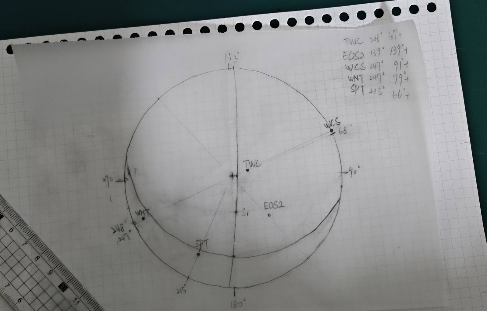
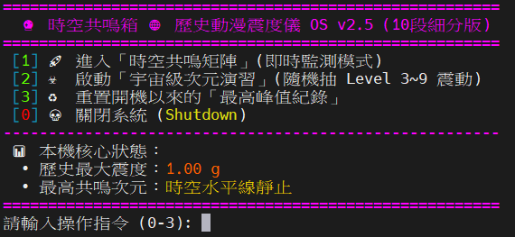
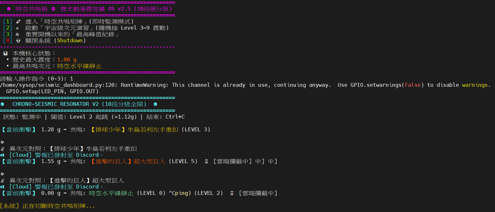
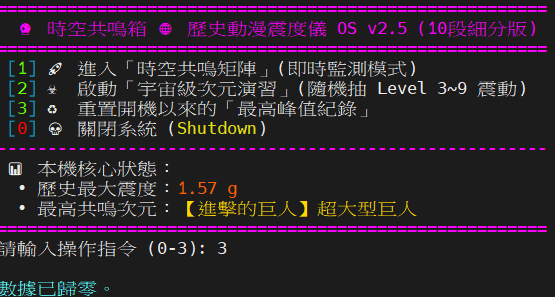
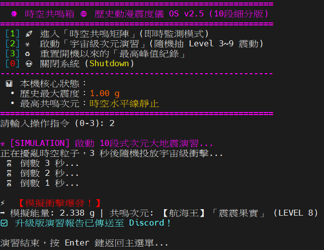

地震學導論：從理論基礎到社會應用數位專題
本專題將生硬的地震學教科書基礎理論轉化為極具可讀性的數位知識系統。內容深度涵蓋了地震波傳播力學（Body Waves & Surface Waves）、走時曲線（Travel-Time Curves）的幾何光學推導，以及應力與應變（Stress & Strain）的基礎張量數學模型。
除了完整的理論脈絡梳理外，本專案更進一步結合工程實務，剖析地表強震動特徵與近代減災、防災工程的實質整合應用（包含土壤液化機制等），落實了理論科學與社會公共安全的跨領域鏈結，並加入前端互動式動畫以提升學習成效。
開啟數位筆記網頁花蓮外海地震震源機制與地體構造應力場析論
本報告針對 2018 年 10 月 23 日發生於台灣花蓮外海深達 31.2 公里的顯著有感強震展開地質構造探討。報告詳盡追蹤並比對了中央氣象署全球即時震源機制解（rCMT）與最終人工校正解答（Final CMT）的參數差異。
國家地震工程研究中心（NCREE）前沿耐震科技實地考察
親赴國家地震工程研究中心進行高階工程實地學術考察，深刻研習現代建築結構耐震設計的三大核心核心方針：「小震不壞、中震可修、大震不倒」。
透過實體見證大型三軸地震模擬振動台與強固反力牆的運作，我們深度探究了設計地震力（反應譜）與結構韌性配筋的核心力學概念。講員更實體展示了主動與被動制震器、速度型消能阻尼器及隔震支承墊的系統配置原理，有效破除大眾對於抗震工程與房屋結構防護的傳統歷史迷思。
跨國科研視野與全球學術研究開拓座談實錄
聚焦於全球化學術研究生涯的策略性藍圖規劃。本報告紀錄了聆聽青年學者宋冠毅老師傾囊相授其中外學術研究的心路歷程，脈絡性地剖析如何從零開始發掘國際科研趨勢、撰寫具備學術說服力的研究計畫書，並從容應對高難度的國際面試挑戰。
座談核心精神為「不要害怕嘗試，要去試試看才有機會」。透過前輩的分享，不僅建立破除未知恐懼的執行力，更詳盡梳理了國家釋出的各類國際研究基金與出國交流管道資訊，為未來學術與海外職涯提供了寶貴指引。
地球內部圈層構造與體波衰減機制動態互動網頁
本專案運用現代化網頁前端技術，將抽象的地球內部層狀圈層構造進行高度視覺化的重構。設計核心在於運用體波（Body Waves，包含 P 波與 S 波）的走時特徵，精確解析莫氏不連續面（Moho）、核幔邊界（Gutenberg Line）及內核邊界（Lehmann Line）的波速跳躍現象。
系統不僅直觀呈現了地球深部的非均向性力學機制與震波能量衰減，更創新整合了即時自我評測答題模組，並透過 Scroll 動畫與互動式組件，大幅提升了學術推廣的沉浸感與互動成效。
體驗動態學習網頁南東太平洋隆起規模 M 6.6 強震之震源機制反演與沙灘球繪製
本項實作精準重現了 USGS 官方事件編號 us6000sz1d（南東太平洋隆起中洋脊張裂區，震源深度 23.5 km）的震源參數解。專案利用 Python 科學計算生態系（包含 Matplotlib、ObsPy 震源機制模組），透過純數值反演將複雜的矩張量數據轉換為直觀的雙力偶沙灘球（Beachball Plot）。
數值分析證實此事件具備高達 91% 的走向滑移（Strike-Slip）分量。透過精確求得主斷層面（走向 285°、傾角 64°、滑動角 -7°）與輔助共軛面，完美展現了太平洋-南極洲板塊邊界超高速擴張洋脊的力學張裂運動特徵。
 透過 Python 繪製出精準的南東太平洋隆起地震雙力偶沙灘球
透過 Python 繪製出精準的南東太平洋隆起地震雙力偶沙灘球
震源矩張量力學與三維焦球立體投影理論成果展示
這份高階網頁成果報告系統性地解構了描述斷層錯動能量釋放的本質物理量——地震矩（Seismic Moment, $M_0 = \mu ar{D} S$）以及其衍生的 3x3 對稱矩陣模型：震源矩張量（Seismic Moment Tensor）。
專案藉由高質感的網頁視覺排版與動畫引擎，細緻推導了如何將三維焦球（Focal Sphere）上的初動輻射圖樣投影至二維下半球立體投影網（Lower Hemisphere Stereonet）的拓撲映射過程，為進階地震地體構造與區域應力場分析奠定了強固的理論基石。
瀏覽高階理論報告虛擬下半球 P 波初動極性立體投影幾何模擬系統
本系統為一套完全自主研發的網頁端幾何模擬軟體。系統核心演算法採用了專業的下半球立體投影公式。使用者可於介面輸入全球各大觀測測站的專屬方位角（Azimuth）與出射角（Take-off Angle）。
系統會全自動根據測站接收到的 P 波初動極性訊號（壓縮 '+' 標示為紅色實心圓點；膨脹 '-' 標示為藍色空心圓圈）進行動態三角函數座標轉換與二維畫布繪製。這套互動式實作工具，為研究者判讀雙力偶斷層幾何面特徵提供了極為直觀的關鍵利器。

P 波初動極性（壓縮與膨脹）下半球動態立體投影成果【時空共鳴箱】歷史與動漫震度微縮預警儀專案開發
【時空共鳴箱】歷史與動漫震度微縮預警儀 是一款將物聯網邊緣運算技術與二次元迷因流行文化完美跨界融合的創意 Raspberry Pi 地震觀測儀專案。系統核心採用樹莓派微處理器架構，透過 I2C 通訊協定以 25Hz 高頻率即時採樣 MPU6050 三軸加速度計的空間重力向量。本專案徹底打破傳統科研數據枯燥乏味的刻板印象，創新研發出「十段式時空次元震度矩陣」演算模型，賦予硬體數據生動幽默的時代演繹。
-
震度分級科學依據與演算矩陣：
系統運用歐幾里得範數（Euclidean Norm）將 MPU6050 的 X、Y、Z 三軸加速度即時融合成不限方向的合成總加速度向量（total_g）。以靜止狀態的 1.0g 為基準線。當動態外力使向量超越 1.05g 閾值時即判定為震動事件，並依據振幅精準投射至 10 段時空次元（如：1.05g 對應「貓咪主子跳下床」；1.90g 聯動《火影忍者》「佩恩·神羅天征」；大於等於 2.60g 則觸發「超級賽亞人變身」名場面）。 -
實體 LED 燈光動態演變與防燒毀機制：
為了在微型硬體無實體限流電阻的嚴苛配置下安全運作，專案核心引入了實體軟體 PWM（脈衝寬度調變）技術。在「即時監測模式」下，低於閾值時佔空比保持 0%（完全熄滅）；一旦超越 1.05g，瞬間給予 15% 的安全恆亮佔空比，維持溫和綠光。當抽到高階強烈震度時，立即切換為「高能演習模式」，啟動 15% 與 0% 交替的數位極限爆閃（每秒 4 次），完美模擬基地警報的強烈科技張力。 -
雲端推播連動與封包冷卻機制：
當衝擊數據達標，樹莓派邊緣端會迅速將發震時間、精密 g 力值及所對應的動漫次元場景打包成標準 JSON 封包，並利用 requests 函式庫透過 HTTP POST 即時發送至 Discord Webhook 伺服器。系統內置了 10 秒的警報冷卻鎖（Cooldown Lock），有效攔截並過濾地震波連續晃動引起的重複觸發，確保硬體燈效穩定與雲端 API 頻寬的安全性。
import smbus
import time
import requests
import RPi.GPIO as GPIO
# ==============================================================================
# 核心參數全域設定區
# ==============================================================================
DISCORD_WEBHOOK_URL = "在這裡貼上你的_Discord_Webhook_網址"
THRESHOLD = 1.5 # 震動觸發門檻 (單位: g)
COOLDOWN_TIME = 15 # 警報冷卻時間 (單位: 秒)
LED_PIN = 18 # 使用 GPIO 18 (實體引腳 Pin 12)
SAFE_ON_DUTY = 15 # 軟體安全限流佔空比 (15%)
def main_menu():
while True:
print(" [H [J", end="") # 清除畫面保持乾淨
print("=======================================================")
print(" Raspberry Pi 微型地震觀測站 - 整合控制台")
print("=======================================================")
print(" [1] 測試 Discord Webhook 連線")
print(" [2] 測試 LED 燈安全閃爍 (PWM 模式)")
print(" [3] 查看 MPU6050 即時三軸數據")
print(" [4] 🚀 啟動整合版地震監測與預警系統")
print(" [0] 離開程式")
print("-------------------------------------------------------")
choice = input("請輸入選項數字 (0-4): ").strip()
if choice == '0':
break
圖一：邊緣運算核心硬體配置
圖二：微型感測器高頻採樣狀態
圖三：PWM 防燒毀安全調光與高能爆閃演練
圖四：動漫次元震度矩陣雲端即時警報紀錄